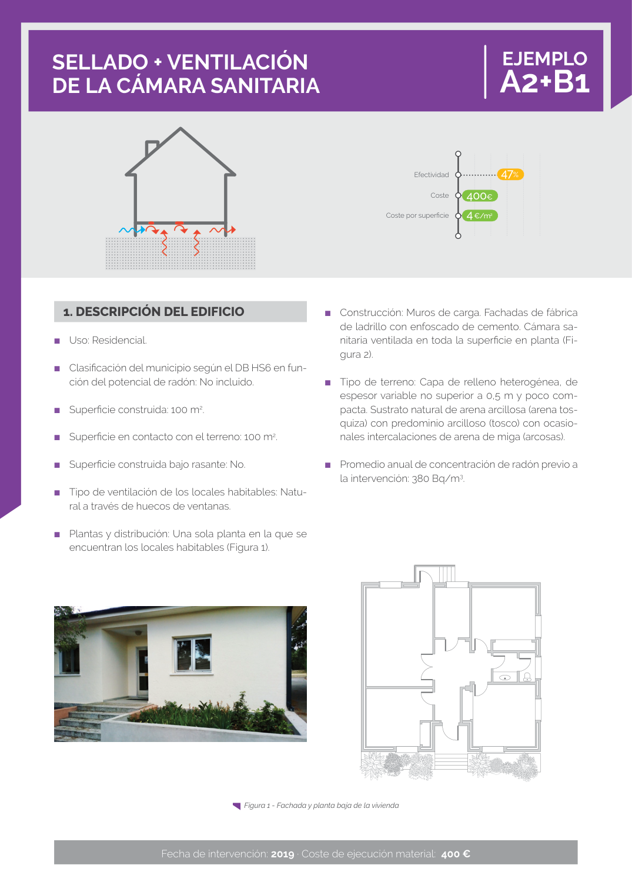

GUIA · Página 1 · versión 2019
SHA256: fe666105504166eb540ca95d1f7591b53a4265882fc1352b75c196e67ce098ae · página física 1 de 5 · métodos de encabezado
solo si están cotejados.
Formatos: Markdown · JSON de bloques · PDF p. 1 · imagen PNG
Página gráfica: el texto extraído puede ser parcial. Prevalece la imagen/PDF; depende de ellos.
SELLADO + VENTILACIÓN DE LA CÁMARA SANITARIA EJEMPLO A2+B1 ■ Construcción: Muros de carga. Fachadas de fábrica de ladrillo con enfoscado de cemento. Cámara sa nitaria ventilada en toda la superficie en planta (Fi gura 2). ■ Tipo de terreno: Capa de relleno heterogénea, de espesor variable no superior a 0,5 m y poco com pacta. Sustrato natural de arena arcillosa (arena tos quiza) con predominio arcilloso (tosco) con ocasio nales intercalaciones de arena de miga (arcosas). ■ Promedio anual de concentración de radón previo a la intervención: 380 Bq/m3. 1. DESCRIPCIÓN DEL EDIFICIO ■ Uso: Residencial. ■ Clasificación del municipio según el DB HS6 en fun ción del potencial de radón: No incluido. ■ Superficie construida: 100 m2. ■ Superficie en contacto con el terreno: 100 m2. ■ Superficie construida bajo rasante: No. ■ Tipo de ventilación de los locales habitables: Natu ral a través de huecos de ventanas. ■ Plantas y distribución: Una sola planta en la que se encuentran los locales habitables (Figura 1). Fecha de intervención: 2019 · Coste de ejecución material: 400 € Figura 1 - Fachada y planta baja de la vivienda Efectividad Coste Coste por superficie 47% 400€ 4 €/m2
